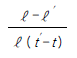
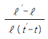
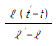
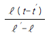

방사선비파괴검사산업기사(구) (2004-09-05 기출문제)
1과목: 방사선투과검사 시험
1. 방사선투과검사시 투과사진 콘트라스트에 영향을 미치는 인자가 아닌 것은?
- 필름의 종류
- 산란 방사선
- 선원과 필름사이의 거리
- 현상도(degree of development)
(정답률: 알수없음)

2. X선 발생장치의 휴지시간(duty cycle)은 다음 중 어느 것에 가장 영향을 받는가?
- 관전류
- 관전압
- 초점의 크기
- 양극의 냉각 속도
(정답률: 알수없음)
3. 밀봉선원을 사용하여 방사선투과검사를 수행할 때 다음중 우선적으로 고려해야 할 피폭은?
- 체내 피폭
- 체외 피폭
- 우주선 피폭
- 적외선 피폭
(정답률: 알수없음)
4. 투과두께 60mm인 시험체를 2mm선원크기로 방사선투과시험 하고자 한다. 시험체 저면과 필름간 거리가 5mm이고, 요구하는 기하학적 불선명도가 0.03인치일 때 선원과 시험체의 거리는 최소한 얼마 이상 떨어져야 하는가?
- 3.0인치
- 4.6인치
- 5.2인치
- 6.8인치
(정답률: 알수없음)
5. 방사선투과필름에서 망상주름(reticulation)이 생기는 이유는?
- 고온에서 현상하고 다음 정지액의 온도가 너무 낮을 때 생긴다.
- 국부적으로 현상액의 온도가 상승한 경우에 생긴다.
- 현상액에 산성의 정착액이 들어갔을 때 생긴다.
- 높은 온도에서 현상하거나, 여름철에 장기간 물에 담가 수세를 하였을 때 생긴다.
(정답률: 알수없음)
6. 방사선투과시험의 단점을 설명한 것으로 틀린 것은?
- 다른 비파괴시험법에 비해 비용이 많이 든다.
- 방사선빔이 결함에 평행해야 한다.
- 미세한 표면 균열은 검출되지 않는 경우도 있다.
- 용접부에만 적용할 수 있다.
(정답률: 알수없음)
7. 다음의 비파괴검사법 중 내부결함 검출에 적합한 경우는?
- 침투탐상검사, 누설탐상검사
- 자분탐상검사, 와전류탐상검사
- 방사선투과검사, 초음파탐상검사
- 육안검사법, 열적현상을 이용한 비파괴시험법
(정답률: 알수없음)
8. 다음 중 초음파탐상시험으로 가장 검출하기 어려운 결함은?
- 평면상의 결함
- 두꺼운 주강품내의 기공
- 균열
- 라미네이션(lamination)
(정답률: 알수없음)
9. 방사선투과검사시 검출 확률이 상대적으로 가장 낮은 결함의 종류는?
- 슬래그개입
- 수축관
- 라미네이션
- 융합부족
(정답률: 알수없음)
10. 다음 중 일반적으로 방사선투과검사용 선원으로 사용되지 않는 동위원소는?
- Ra-226
- Co-60
- Ir-192
- Tm-170
(정답률: 알수없음)
11. X선 발생장치의 관전압과 투과사진 콘트라스트와의 관계에 대한 설명으로 올바른 것은?
- 관전압은 필름 입상성에만 관계한다.
- 관전압과 투과사진 콘트라스트는 무관하다.
- 관전압이 높아질수록 투과사진 콘트라스트가 높아진다.
- 관전압이 높아질수록 투과사진 콘트라스트가 낮아진다.
(정답률: 알수없음)
12. 다음 중 X선이나 γ선이 물질과의 상호작용에 의해 에너지를 상실하는 과정이 아닌 것은?
- 광전효과
- 콤프턴 산란
- 전자쌍생성
- 제동방사
(정답률: 알수없음)
13. 다음 방사성 동위원소 중 비방사능이 가장 큰 선원은?
- Tm -170
- Ir-192
- Cs -137
- Co-60
(정답률: 알수없음)
14. 방사선투과시험에 사용하는 X선 발생장치에 대한 설명으로 옳지 않은 것은?
- 장치에 사용되는 전류는 조정기를 통하여 쉽게 조정할 수 있다.
- 동일한 피크 전압 및 전류로 작동되는 경우에도 X선발생장치에 따라 X선 강도는 달라질 수 있다.
- 동일한 투과사진 농도를 얻기 위해서는 X선 발생장치의 노출도표를 작성하는 것이 바람직하다.
- 고전압 X선 장치는 일반적으로 노출 조건을 선정하기 위해 전압을 조정하게 되어 있다.
(정답률: 알수없음)
15. 방사성물질을 방사선투과검사할 때 고려해야 할 주요인자를 나열한 것이다. 아닌 것은?
- 검사속도
- 필터링
- 방사선강도
- 초점-시편간거리
(정답률: 알수없음)
16. 방사성 동위원소가 붕괴되어 원자수가 반으로 줄어드는데 걸리는 시간을 무엇이라 하는가?
- 큐리
- 반가층
- 반감기
- 노출시간
(정답률: 알수없음)
17. X선 발생장치로 120kV를 작동시킬 때 X선 최소 파장[Å]은 약 얼마인가?
- 0.1
- 0.5
- 1.0
- 1.5
(정답률: 알수없음)
18. 비파괴검사의 종류와 특성에 대한 설명으로 틀린 것은?
- 내부결함의 검출에 적당한 방법은 초음파탐상시험이 있다.
- 와전류탐상시험은 강자성체의 재료만 적용 가능하다.
- 표층부 결함의 검출에 적당한 방법은 자분탐상시험이 있다.
- 용접부의 블로홀 (blow hole)검출에 최적인 시험법은 방사선투과시험이다.
(정답률: 알수없음)
19. 강판의 두께가 30mm일 때 60Co과 중감도 미립자 필름(후지 # 100)을 조합하여 촬영하는 경우 KS규격의 투과도계의 식별 최소 선지름은?
- φ0.35㎜
- φ0.42㎜
- φ0.46㎜
- φ0.80㎜
(정답률: 알수없음)
20. 방사선투과시험시 선원의 크기가 2㎜, 선원에서 시험편까지의 거리가 60㎝, 시험편과 필름사이의 거리가 1㎝라면 기하학적 불선명도는?
- 0.03㎜
- 2㎜
- 0.2㎜
- 0.66㎜
(정답률: 알수없음)
2과목: 방사선투과검사 시험
21. X, γ선에 의한 방사선투과검사 촬영시 다음 중 시험체에서 발생되는 산란선을 제거 또는 흡수할 목적으로 사용되는 것들의 조합은?
- Cone, Collimator
- Mask, Lead Screen
- Filter, Diaphragm
- Penetrameter, Shim stock
(정답률: 알수없음)
22. 주물에서 나타날 수 있는 결함 중 미스런(misrun)에 관한설명으로 옳은 것은?
- 형태는 둥글거나 매끄럽고 길쭉한 모양으로 생긴다.
- 용탕 온도 및 합금 배합의 부적절한 조작으로 발생하며 스폰지 모양을 갖고 있다.
- 용탕이 주형내를 충분히 돌지 못하고 주물면에 용탕이 마주친 경계가 생기는 것을 말한다.
- 용탕의 온도가 낮아진 경우나 주형에 의해 흐름의 저항이 커서 일부에 용탕의 부족한 부분이 생기는 경우를 말한다.
(정답률: 알수없음)
23. 다음 중 용접부 방사선투과시험시 선형 투과도계 사용에 대한 설명이다. 옳은 것은?
- 용접부위에 가는 선을 밖으로 하여 유효길이의 양끝에 놓는다.
- 용접선 방향으로 중앙근처에 위치시킨다.
- 용접 단으로부터 5mm 내지 10mm 떨어져 놓는다.
- 용접부위에 관계없이 제품의 모재부위에 놓는다.
(정답률: 알수없음)
24. 다음 중 결함 형태가 날카롭기 때문에 결함주위에 집중되는 응력이 커지므로 성장이 가장 쉽게 예상되는 결함의 종류는?
- 기공
- 터짐
- 파이프
- 슬래그개입
(정답률: 알수없음)
25. 방사선 발생장치의 구조에서 음극에 해당되며, 열전자의 발생원이 되는 곳은?
- 필라멘트
- 금속 표적
- 집속 캡
- 후드
(정답률: 알수없음)
26. γ선 조사장치에서 발생되는 감마선의 설명으로 가장 적합한 것은?
- 감마선은 빛과 전혀 다른 성질을 지니고 있는 베타선의 일종이다.
- 감마선은 보통 저 에너지를 갖고 있어 물질을 이온화 할 수 없다.
- 감마선은 높은 에너지를 지니고 있는 입자 방사선의 일종이다.
- 감마선은 높은 에너지를 지니고 있는 빛과 같은 전자파의 일종이다.
(정답률: 알수없음)
27. Cs-137의 물리적 반감기는 30.2년이고 생물학적 반감기는 70일이다. 이 때 유효 반감기는?
- 21.1일
- 69.56일
- 0.047일
- 0.0144일
(정답률: 알수없음)
28. 다음 중 방사선 투과사진의 결함을 판독할 때에 원형과 선형의 구별에 대하여 올바른 설명은?
- 길이가 너비의 2배이상일 때 선형 결함으로 한다.
- 길이가 너비의 3배이상일 때 선형 결함으로 한다.
- 길이와 너비에 관계없이 개재물은 선형 결함으로 한다.
- 길이와 너비에 관계없이 가스· 홀은 원형 결함으로 한다.
(정답률: 알수없음)
29. 평판맞대기 용접부에 방사선투과검사를 수행하여 융합부족 결함을 찾고자 한다. 방사선의 방향을 어떻게 해야 방사선 투과사진에 융합부족 결함이 잘 나타나겠는가?
- 평판 용접부에 수직인 방향으로 방사선 조사
- 평판 용접부와 평행한 방향으로 방사선 조사
- 예측되는 결함방향과 평행인 방향으로 방사선 조사
- 예측되는 결함방향과 수직인 방향으로 방사선 조사
(정답률: 알수없음)
30. 방사선 투과사진 상에서 완만한 외곽선을 가지고 선명한 검은 선 또는 길이 및 폭이 가변적으로 변하면서 나타나는 주조품의 지시는?
- 수축관
- 핫티어
- 콜드셧
- 편석
(정답률: 알수없음)
31. 다음 중 덮개의 일종으로 필요한 부분만 방사선을 보내어 산란방사선의 영향을 줄이는 것이 아닌 것은?
- 콜리메타
- 다이아프램
- 콘
- 납 증감지
(정답률: 알수없음)
32. 방사선투과검사시 현상온도가 낮을 때 나타나는 현상은?
- 콘트라스트가 낮아진다.
- 농도가 높아진다.
- 그물모양의 무늬가 발생한다.
- 노란 얼룩이 발생한다.
(정답률: 알수없음)
33. 다음 중 방사선투과검사에서 투과도계(상질계)의 사용 목적으로 타당치 아니한 경우는?
- 불연속 크기의 판단
- 촬영 기법의 타당성 판정
- 필름과 스크린의 적합성 결정
- 시험체와 필름간 거리의 적절성 판정
(정답률: 알수없음)
34. 방사선투과검사시 X선 발생장치에 비하여 γ선 조사장치를 사용하는 장점의 설명으로 틀린 것은?
- 전원이 필요치 않다.
- 협소한 장소에서 작업이 용이하다.
- 방사선 안전관리가 용이하다.
- 다양한 시험체 두께에서 상질이 양호하다.
(정답률: 알수없음)
35. 방사선 강도를 I, 거리를 D라 할 때, 역제곱법칙을 나타낸 공식은?
- I1/I2 = (D2/D1)2
- D1/D2 = (I1/I2)2
- I1/D1 = (I2/D2)2
- I2/I1 = (D2/D1)2
(정답률: 알수없음)
36. X선관 필라멘트에서 발생된 전자가 튜브의 유리벽 등에 부딪쳐 발생된 2차 전자가 양극에 충돌할 때 발생되는 방사선은?
- 백색방사선
- 특성방사선
- Stem방사선
- Soft방사선
(정답률: 알수없음)
37. 방사선 투과사진의 기하학적 불선명도를 구할 때, 선원의 크기가 2mm이고 선원-필름간의 거리가 70cm, 시험체 두께가 100mm일 때 기하학적 불선명도(Ug)는?
- 0.33mm
- 0.33cm
- 0.29mm
- 0.29cm
(정답률: 알수없음)
38. 콜리메터를 부착하지 않은 Ir-192 γ선 조사장치와 유사한 형태로 방사선이 방출되는 X선관 표적의 형태는?
- 원추형
- 일방향 집속형
- 회전형
- 선 초점형
(정답률: 알수없음)
39. 방사선투과시험에 사용되는 노출도표는 다음 중 어느 방법에 의해 작성될 수 있는가?
- pin hole 방법을 사용하여 작성할 수 있다.
- step wedge를 사용하여 작성할 수 있다.
- parallax 방법을 사용하여 작성할 수 있다.
- 투과도계를 사용하여 작성할 수 있다.
(정답률: 알수없음)
40. 방사선투과검사의 노출조건은 노출도표에 의거할 때, X선 노출도표에는 있으나 γ선 노출도표에는 없는 인자는 다음 중 어느 것인가?
- 필름의 종류
- 관전압
- 시험체 두께
- 필름농도
(정답률: 알수없음)
3과목: 방사선안전관리, 관련규격 및 컴퓨터활용
41. 서버를 직접 운용할 수 없는 중소기업이나 개인이 서버의 일부분을 임대하여 웹 사이트를 운영하도록 하는 서비스는?
- 웹 호스팅
- 로밍 서비스
- 서버 호스팅
- 웹 블루투스
(정답률: 알수없음)
42. Co-60 선원에 대한 납의 반가층이 0.5인치일 때 어떤 위치에서의 선량율이 64R/h라면, 1.5인치 두께의 차폐체를 사용하면 선량율은 얼마나 되겠는가?
- 8R/h
- 12.3R/h
- 10.7R/h
- 32R/h
(정답률: 알수없음)
43. ASME 규격에서 재료 두께 2인치 이상 3인치 미만인 경우에 허용되는 최대 기하학적 불선명도의 크기는?
- 0.32mm
- 0.55mm
- 0.76mm
- 1.02mm
(정답률: 알수없음)
44. ASME Sec.Ⅴ에 따라 선형 투과도계(wire type I.Q.I)를 사용할 때 한 개이상의 투과도계를 사용해야 할 경우는?
- 필름농도가 투과도계 부근 농도의 -15%∼+30%를 초과할 때
- 필름농도가 투과도계 부근 농도의 -30%∼+15%를 초과할 때
- 필름농도가 투과도계 선(wire) 농도의 -15% ∼+30%를 초과할 때
- 필름농도가 투과도계 선(wire) 농도의 +15% ∼-30%를 초과할 때
(정답률: 알수없음)
45. KS B 845에 따라 강판의 맞대기용접이음부를 촬영하고자 할 때 투과도계를 놓은 방법이 틀리는 것은?
- 2개의 투과도계를 사용한다.
- 용접부에 걸쳐서 놓는다.
- 가는 선이 선원과 가까운 쪽으로 향하게 놓는다.
- 시험부의 선원쪽 면상에 놓는다.
(정답률: 알수없음)
46. KS B 0845에 의거하여 투과사진에 기공 및 가는 슬래그개입이 혼재되어 있을 때의 결함분류 방법으로 틀린 것은?
- 결함의 종류별로 각각 등급 분류한다.
- 2가지 결함이 있을 때는 하위결함 등급분류로 한다.
- 2가지 결함등급이 같을 때는 2등급 하위로 분류한다.
- 1류에 대해서는 결함점수의 1/2을 초과할 때는 2류로 한다.
(정답률: 알수없음)
47. 다음 도메인 이름 중에서 기관식별코드가 교육기관에 속한 사이트의 이름으로 맞는 것은?
- ddd.univ.co.kr
- db.ccc.eq.kr
- aaa.bbb.ac.kr
- ftp.univ.go.kr
(정답률: 알수없음)
48. AWS code에 따라 용접부 방사선투과사진을 판독할 때 용입부족이 존재한다면 결함 평가에 대한 다음 설명중 옳은 것은?
- 슬래그 개재물과 동일한 방법으로 평가.판정한다.
- 길이에 관계없이 불합격으로 판정한다.
- 1/16인치(1.6㎜)를 초과하는 용입부족은 불합격으로 판정한다.
- 슬래그 개재물의 합격기준 길이의 반 이하이면 합격으로 판정한다.
(정답률: 알수없음)
49. Co-60을 사용하여 방사선투과검사를 할 때 다음 중 고에너지로 인하여 인체에 가장 위해한 방사선은?
- 감마선
- 알파선
- 베타선
- 중성자선
(정답률: 알수없음)
50. 24세의 방사선 작업종사자가 2003년 12월 31일까지 방사선작업, 긴급작업, 사고 등으로 총 100mSv를 받았다. 이 사람의 2003년도 최대허용 피폭선량은 얼마인가?(단, 방사선에 의한 사고나 긴급작업으로 인한 피폭선량은 50mSv이다.)
- 50mSv
- 80mSv
- 100mSv
- 1년간 방사선작업 중지
(정답률: 알수없음)
51. KS D 0245 알루미늄 T형 용접부의 방사선투과시험에서 시험부의 결함 이외 부분의 사진농도는 얼마로 규정하고 있는가?
- 1.5 이상 3.5 이하
- 2.0 이상 4.0 이하
- 1.0 이상 3.0 이하
- 2.5 이상 4.5 이하
(정답률: 알수없음)
52. ASTM E 446은 두께 2인치미만의 주물에 대한 표준 대비필름(Standard Reference)에 대한 규격이다. 이 규격에 의하면 결함의 종류에 따라 범주 A부터 G까지 분류하고 있다. 균열의 경우는 범주 어디에 포함되는가?
- A
- CA
- D
- F
(정답률: 알수없음)
53. PC의 바이어스(BIOS)에 대한 설명으로 올바른 것은?
- 바이어스는 컴퓨터의 입출력장치, 메모리 등 하드웨어를 관리하는 프로그램이다.
- 컴퓨터의 보조기억장치에 저장되어 있다.
- 바이러스를 막을 수 있다.
- 인터넷의 속도를 향상시킬 수 있다.
(정답률: 알수없음)
54. KS B 0845에 의거 모재두께가 13㎜인 강용접부의 B급 촬영에서 요구되는 계조계의 값은 0.096이다. 모재부분의 농도를 3.0이라 했을 때 계조계의 농도는 최소 얼마를 초과하여야 하는가?
- 2.0
- 2.3
- 2.7
- 3.0
(정답률: 알수없음)
55. 원자력법에 의하여 방사선취급감독자 면허를 취득하고자 한다. 다음 중 면허를 취득할 수 없는 연령의 한계는?
- 25세미만
- 22세미만
- 20세미만
- 18세미만
(정답률: 알수없음)
56. 방사선 관리구역이란?
- 외부방사선량율이 1일당 30mrem 이상인 곳
- 내부방사선량율이 1일당 30mrem 이상인 곳
- 외부방사선량율이 1주당 400mSv 이상인 곳
- 내부방사선량율이 1주당 400mSv 이상인 곳
(정답률: 알수없음)
57. 방사선작업자의 연간 섭취한도는 ICRP-61의 계산 방법을 적용하여 유도한다. 적용하는 선량한도는 얼마인가?
- 20mSv/년
- 40mSv/년
- 60mSv/년
- 80mSv/년
(정답률: 알수없음)
58. 다음 중 컴퓨터간의 통신을 위한 소프트웨어는?
- 클리퍼
- 페이지메이커
- 이야기
- 바이로봇
(정답률: 알수없음)
59. 어떤 곳에서 방사선량율이 4R/h일 때, 125mR/h로 줄이려면 차폐체의 두께는?
- 2반가층
- 3반가층
- 4반가층
- 5반가층
(정답률: 알수없음)
60. 다음 중 파워포인트에서 제공하는 화면 전환 기능이 아닌것은?
- 개요보기
- 슬라이드 노트
- 슬라이드 쇼
- 미리보기
(정답률: 알수없음)
4과목: 금속재료 및 용접일반
61. 용접봉 기호 E 4316 에서 E 의 의미로 가장 적합한 것은?
- 아크 안정제
- 용접자세
- 가스 용접봉
- 피복 아크 용접봉
(정답률: 알수없음)
62. 전기동을 진공이나 무산화분위기에서 정련 주조한 것으로 진공관 또는 전자기기용으로 사용되는 것은?
- 전로동
- 제련동
- 무산소동
- 강인동
(정답률: 알수없음)
63. 외적 구속이 없고 주변이 자유인 맞대기 용접이음의 잔류응력 분포에서 가장 큰 잔류응력을 가진 부분인 것은?
- 용접중심부
- 열영향부
- 본드(bond)부
- 모재부
(정답률: 알수없음)
64. 금속에 대한 설명 중 틀린 것은?
- 비중 약 5이상의 금속을 중금속이라 하며 Aℓ , Ni, Ti, Cu, Mg 등이 이에 속한다.
- 금속이 갖는 특성 중 연성 및 전성이 좋다는 것은 소성변형능이 큰 것을 나타낸다.
- 금속적 성질과 비금속적 성질을 같이 나타내는 것을 아금속(metalloid)이라 한다.
- 일반적으로 융점이 높은 금속은 비중도 크다.
(정답률: 알수없음)
65. 아크전류가 200A, 아크전압 25V, 용접속도 15cm/min일 때 용접 단위길이 1cm당 발생하는 용접입열은 얼마인가?
- 15000 J/cm
- 20000 J/cm
- 25000 J/ cm
- 30000 J/cm
(정답률: 알수없음)
66. 표면의 균열, 홈, 핀홀(pin hole) 등 결함에 대하여만 유효한 방법으로 특히 비자성 재료의 표면검출에 효과가 있으며, 육안으로 결함의 크기를 식별할 수 있는 검사법은 ?
- 침투탐상법
- 자분탐상법
- 초음파탐상법
- 방사선투과법
(정답률: 알수없음)
67. 심용접의 종류 중 심부의 겹침을 모재 두께 정도로 하여 겹쳐진 폭 전체를 가압하여 결합하는 방법은?
- 맞대기 심 용접(butt seam welding)
- 매시 심 용접(mash seam welding)
- 포일 심 용접(foil seam welding)
- 다전극 심 용접(multi seam welding)
(정답률: 알수없음)
68. 온도 t ℃에서 길이 ℓ 인 봉을 온도 t잭綽 로 올릴 때 길이가 ℓ 잭로 팽창했다면 이 때의 열팽창 계수는?




(정답률: 알수없음)
69. 오스테나이트계 스테인리스강의 특징이 아닌 것은?
- 내식성이 우수하다.
- 강자성체이며 인성이 나쁘다.
- 가공이 쉽고 용접도 용이하다.
- 염산, 염소가스, 황산 등에 의해 입계부식이 생기기 쉽다.
(정답률: 알수없음)
70. 다음 원소 중 비중이 가장 큰 것은?
- V
- Sb
- Mo
- Mn
(정답률: 알수없음)
71. 아크용접에서 직류 정극성으로 용접할 경우 모재의 용입에 대한 역극성과의 비교 설명으로 올바른 것은?
- 두께에 따라 다르다.
- 직류 역극성보다 얇다.
- 직류 역극성보다 깊다.
- 역극성과 정극성이 같다.
(정답률: 알수없음)
72. 후크의 법칙이 적용되는 한계는?
- 연신한도
- 탄성한도
- 항복점
- 파단점
(정답률: 알수없음)
73. 가스 용접시 팁 끝이 순간적으로 막히면 가스의 분출이 나빠지고 토치의 가스 혼합실까지 불꽃이 도달되어 토치가 빨갛게 달구어지는 현상을 무엇이라 하는가?
- 역류
- 역화
- 인화
- 점화
(정답률: 알수없음)
74. 스테인리스강의 미그(MIG) 용접에서 사용되는 보호가스 (Shielding gas)로 가장 적합한 것은?
- N2
- CO2
- O2
- 98% Ar + 2% O2
(정답률: 알수없음)
75. 열팽창 계수가 대단히 적고 내식성도 좋아 표준척, 시계 추, 바이메탈 등에 사용되는 합금은?
- 퍼말로이(Permalloy)
- 콘스탄탄(Constantan)
- 모넬메탈(Monel metal)
- 인바(Invar)
(정답률: 알수없음)
76. 청정효과(cleaning action)는 금속표면의 산화 피막을 자동적으로 제거하는 특성으로 다음 중 어느 용접에서 가장 많이 생기는 효과인가?
- 원자수소 용접
- 탄산가스 아크 용접
- 서브머지드 아크 용접
- 불활성 가스 금속 아크 용접
(정답률: 알수없음)
77. 구조용 복합 재료에서 FRM이란?
- 비정질합금
- 수소저장합금
- 형상기억합금
- 섬유강화금속
(정답률: 알수없음)
78. 열전대용 합금이 아닌 것은?
- 구리-콘스탄탄
- 크로멜-알루멜
- 실루민-알펙스
- 백금-백금로듐
(정답률: 알수없음)
79. 탄소강 중에 함유되어 인장강도, 탄성한계, 경도를 상승시키며 연신율과 충격값을 감소시키는 것은?
- Sn
- Si
- Pb
- S
(정답률: 알수없음)
80. 맞대기 용접에 대한 필릿 용접이음의 비교 설명으로 틀린것은?
- 맞대기 용접보다 현장 조립시 좋다.
- 맞대기 용접보다 용접 결함이 생기기 쉽다.
- 맞대기 용접보다 변형 및 잔류응력이 크다.
- 맞대기 용접보다 부식에 영향을 많이 받는다.
(정답률: 알수없음)